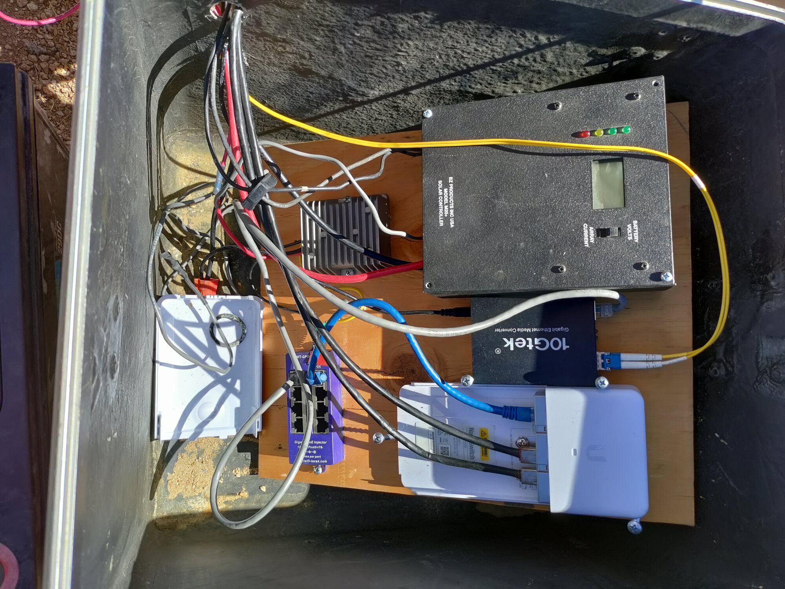
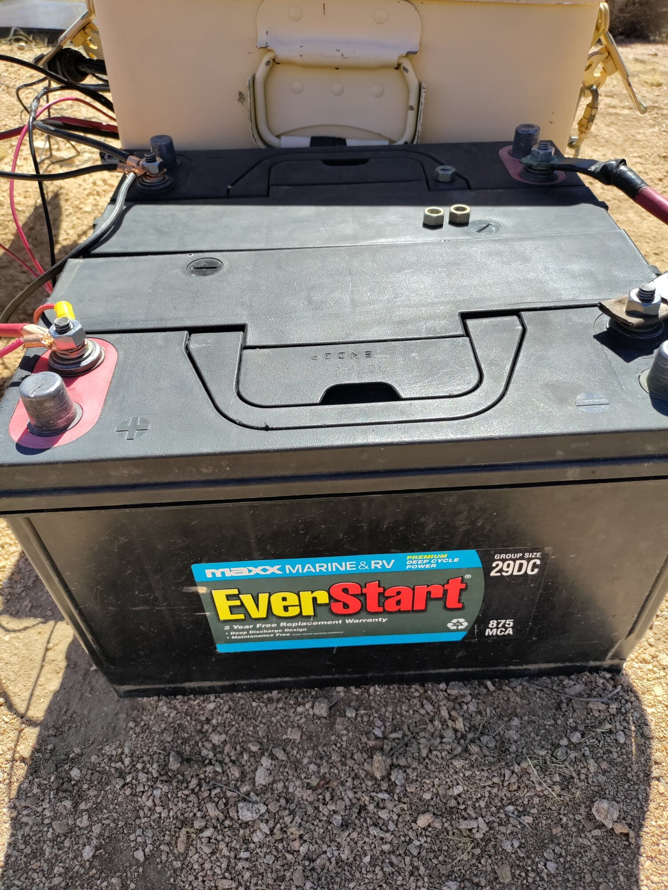
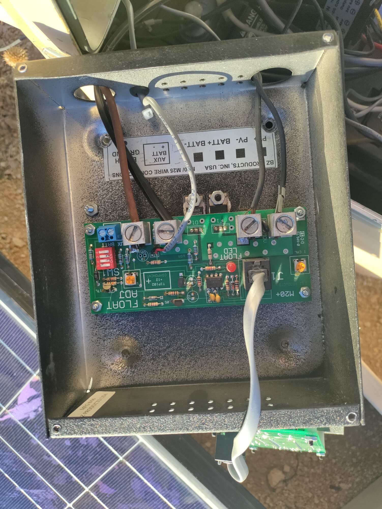
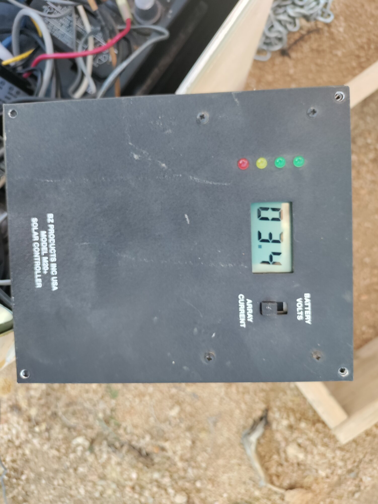

Field Report 020 · Energy
Mojave Wi-Fi
Hilltop Relay
Update
Battery Replacement, Charge Controller Recovery & Enclosure Reorganization Field Report — September 30, 2026 Overview The Mojave Wi-Fi hilltop relay solar power system has been restored to reliable operation following replacement of the original failing battery bank.

The previous battery installation had become unreliable, with poor charging performance and a difficult-to-service wiring arrangement. The replacement batteries have restored normal solar charging, and the electronics have been reorganized onto a plywood mounting board inside the enclosure.
This represents a major improvement in both system reliability and future maintainability.
---
System Status
Location: Mojave Wi-Fi Hilltop Relay
Purpose: Off-grid solar-powered internet relay
System voltage: 24 V nominal
Battery type: Flooded lead-acid deep cycle
Charge controller: BZ Products M20+
Network equipment: Ubiquiti radio/fiber relay system
---
Battery Bank Replacement
The old battery bank was removed and replaced with two EverStart Marine & RV Group 29DC deep-cycle batteries.
Configuration:
- - Two 12 V batteries
- - Wired in series
- - 24 V nominal battery bank
The batteries are now located outside the electronics enclosure, allowing:
- - easier inspection,
- - easier terminal access,
- - better separation between batteries and electronics,
- - easier future replacement.
The outdoor battery location will require continued attention to:
- - weather protection,
- - terminal corrosion prevention,
- - battery watering,
- - sun exposure mitigation.
---
Charging Performance Restored
After battery replacement, the solar charging system began operating normally again.
Field observation:
Charging voltage in full sun: approximately 31 V
This confirms:
- - solar input is present,
- - charge controller is functioning,
- - battery bank is accepting charge.
However, 31 V is higher than expected for normal daily float operation of a 24 V flooded lead-acid bank and may represent:
- - absorption charging,
- - equalization,
- - or a high float adjustment setting.
Further adjustment and observation are required.
---
Charge Controller Investigation
The BZ Products M20+ charge controller contains two adjustment potentiometers (“pots”).
Observed controls:
Left Pot — “I CAL”
Purpose:
- - Current calibration adjustment.
Accidental adjustment:
- - The I CAL pot was accidentally turned during troubleshooting.
- - It was only moved approximately ¼ turn.
- - It was not forced past its stop.
Expected effect:
- - May affect the accuracy of the current display.
- - Should not affect battery charging voltage.
Action:
- - Leave unchanged until proper calibration can be performed.
---
Right Pot — “FLOAT ADJ”
Purpose:
- - Adjusts the controller float voltage.
Future adjustment procedure:
- 1. Wait until the controller enters float mode.
- 2. Confirm FLOAT LED operation.
- 3. Measure voltage directly across the 24 V battery bank.
- 4. Adjust only in very small increments.
Target range:
- - Approximately 28 V range for normal 24 V flooded lead-acid operation.
The adjustment should be done slowly because the pot is a single-turn adjustment with a limited range.
---
Float Indicator Investigation
The controller’s red FLOAT LED is now an important diagnostic because the LCD display is no longer functioning.
Expected behavior:
- - Morning / depleted battery:
- - FLOAT LED normally off.
- - Controller is actively charging.
- - Battery fully charged:
- - Controller transitions into float.
- - FLOAT LED should illuminate.
The FLOAT LED will be used as the indicator for when to check and adjust final charging voltage.
---
Display Failure
The M20+ display is no longer functioning.
Current condition:
- - LCD screen: blank
- - Controller LEDs: active
- - Charging operation: confirmed
The failed display does not currently prevent operation, but it reduces monitoring capability.
Future options:
- - repair/replace display,
- - add independent voltage monitoring,
- - integrate battery voltage monitoring into the Fieldstation monitoring system.
---
Electronics Reorganization
The internal enclosure has been significantly improved.
Previous condition:
- - loose wiring,
- - difficult troubleshooting,
- - components mixed together,
- - “rat’s nest” configuration.
Current condition:
- - electronics mounted on plywood,
- - components separated,
- - wiring easier to trace,
- - service access improved.
This creates a better foundation for future upgrades:
- - proper fuse labeling,
- - cable strain relief,
- - terminal blocks,
- - weatherproof battery connections,
- - remote monitoring.
---
Current Status
| Component | Status |
|---|---|
| Solar charging | ✅ Working |
| Battery bank | ✅ Replaced |
| 24 V system | ✅ Operational |
| Charge controller | ✅ Operating |
| Controller display | ⚠️ Failed |
| Float adjustment | ⚠️ Needs verification |
| I CAL setting | ⚠️ Accidentally adjusted, monitor only |
| Electronics mounting | ✅ Improved |
| Network relay | ✅ Operational |
---
Next Field Tasks
1. Confirm battery voltage when FLOAT LED activates.
2. Adjust FLOAT ADJ if necessary.
3. Verify batteries are not held at excessive voltage.
4. Add battery protection:
- terminal covers,
- corrosion protection,
- enclosure/shade improvement.
5. Add permanent voltage monitoring.
---
Field Note
This repair marks an important transition for the Mojave Wi-Fi Hilltop Relay. The system has moved from an improvised installation into a serviceable off-grid infrastructure node.
The battery failure became an opportunity to simplify the system: new batteries, cleaner wiring, easier troubleshooting, and a clearer path toward long-term autonomous operation.
Photographic Record
The work, seen in place
Selected photographs from the private FieldStation source record.



System Thread
Where this system connects
Public synopsis derived from Boulder Gardens Fieldstation Workbook source record FR020. Detailed equipment records, calculations, unresolved questions, and corrections remain in the workbook.